Antibiotique = molécule naturelle ou synthétique capable d'inhiber la croissance (bactériostatique) ou de détruire (bactéricide) certaines bactéries, à faible concentration, en ciblant des fonctions essentielles et spécifiques de la cellule bactérienne.
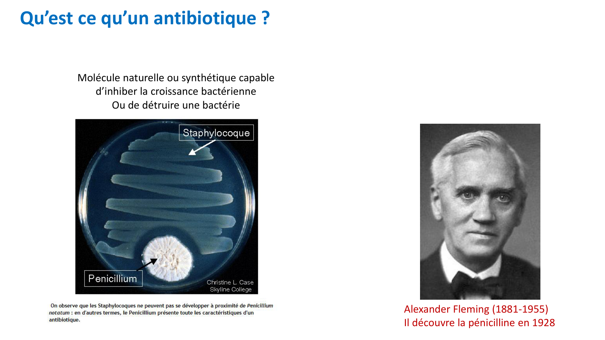
| Propriété | Définition | Évalué par | Exemples |
|---|---|---|---|
| Bactériostatique | Inhibe la croissance bactérienne sans mort cellulaire. Quand l'activité est maximale, le nombre de bactéries reste égal à l'inoculum initial. | CMI | Macrolides, tétracyclines, sulfamides, lincosamides, phénicolés, triméthoprime |
| Bactéricide | Entraîne la mort des bactéries (diminution de 3 à 4 log). Survie ≤ 0,01 % des bactéries initiales. | CMB | Bêta-lactamines, aminosides, fluoroquinolones, vancomycine, daptomycine, métronidazole, rifampicine |
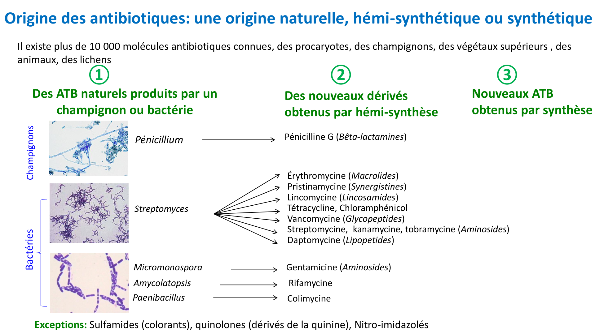
Le noyau bêta-lactame (cycle à 4 atomes) est le pharmacophore commun. Les substitutions chimiques permettent de :
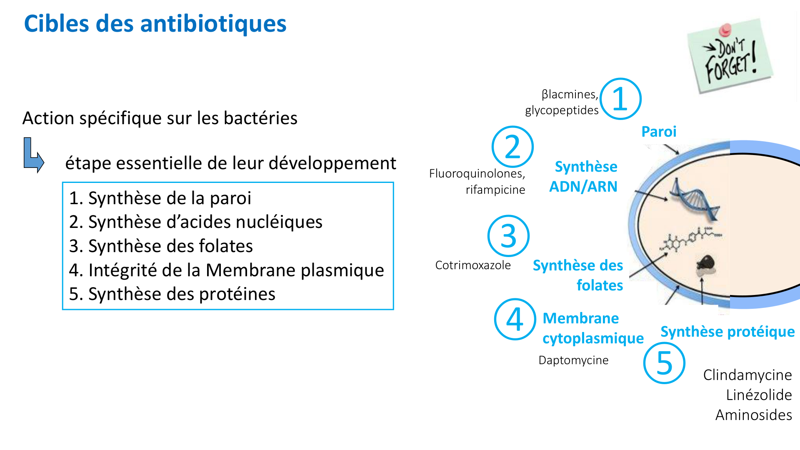
Le peptidoglycane (PG) est la structure rigide assurant la forme et la résistance osmotique de la bactérie. C'est la cible la plus importante cliniquement.
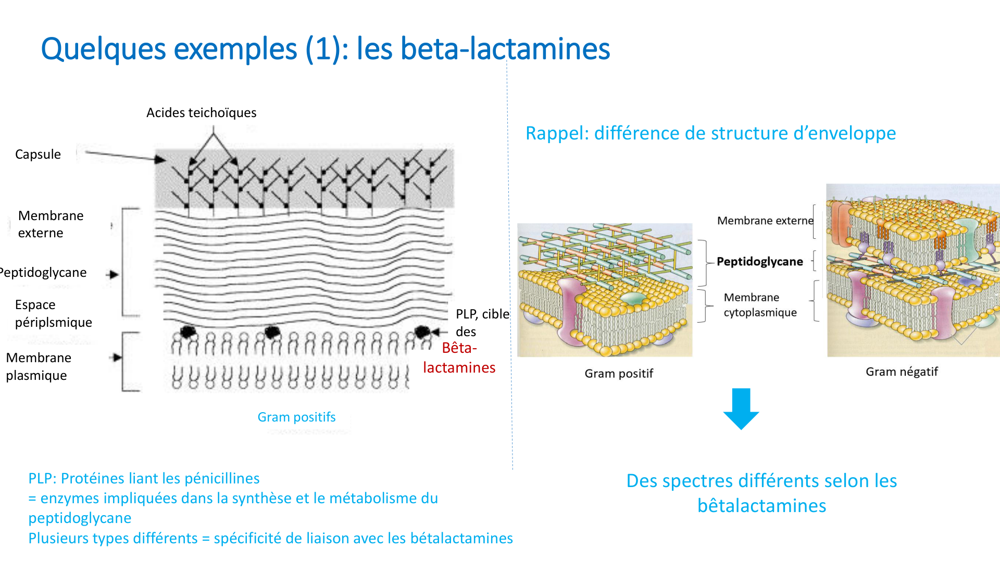
Les PLP (Protéines Liant les Pénicillines) sont des enzymes impliquées dans la synthèse et le métabolisme du peptidoglycane (transpeptidases, transglycosylases). Les bêta-lactamines s'y fixent de façon covalente → inhibition de la transpeptidation → paroi fragilisée → lyse bactérienne (osmose).
| Famille | Mécanisme | Molécules clés | Spectre |
|---|---|---|---|
| Fluoroquinolones | Inhibition de l'ADN gyrase (Gram négatif, sous-unité GyrA codée par gyrA) et de la topo-isomérase IV (Gram positif, sous-unité ParC codée par parC) → blocage de la réplication et de la transcription de l'ADN | Ciprofloxacine, lévofloxacine, moxifloxacine, norfloxacine | Large (Gram + et −) selon la génération. Bactéricides concentration-dépendants. |
| Rifampicine | Inhibition de l'ARN polymérase ADN-dépendante bactérienne (sous-unité β codée par rpoB) → blocage de la transcription | Rifampicine, rifabutine | Large (Gram +, mycobactéries). Ne jamais utiliser en monothérapie (résistances rapides) |
| Métronidazole | Activation intracellulaire en milieu réducteur anaérobie → métabolite actif (nitro-radical) → cassures de l'ADN bactérien | Métronidazole (Flagyl), ornidazole | Anaérobies stricts uniquement (nécessite milieu réducteur pour activation) |
Les folates (acide folique) sont indispensables à la synthèse des bases puriques et thymidylate (ADN). Les bactéries synthétisent leurs propres folates (les cellules humaines les importent de l'alimentation) → cible sélective.
| Molécule | Étape bloquée |
|---|---|
| Sulfamides (sulfaméthoxazole) | Inhibition de la dihydroptéroate synthase (analogues structuraux du PABA, substrat de l'enzyme) |
| Triméthoprime | Inhibition de la dihydrofolate réductase bactérienne (DHFR) → blocage de la réduction en tétrahydrofolate actif |
| Association Cotrimoxazole (SMX + TMP, ratio 5/1) | Double blocage séquentiel → synergie bactéricide (vs chaque molécule seule : bactériostatique) |
| Famille | Mécanisme | Molécules | Spectre & Usage |
|---|---|---|---|
| Polymyxines | Polypeptide cationique → interaction électrostatique avec les LPS de la membrane externe Gram− → désorganisation membranaire → lyse | Colistine (colistiméthate sodique = Colimycine) | Gram négatif uniquement (dont Pseudomonas, Acinetobacter). Antibiotique de dernier recours — néphrotoxicité dose-dépendante |
| Lipopeptides cycliques | Insertion dans la membrane cytoplasmique Gram+ → dépolarisation → sortie d'ions → mort cellulaire rapide | Daptomycine (Cubicin) | Gram positif uniquement (SARM, ERG). Injectable uniquement. Contre-indiquée dans les pneumonies (inactivée par le surfactant pulmonaire) |
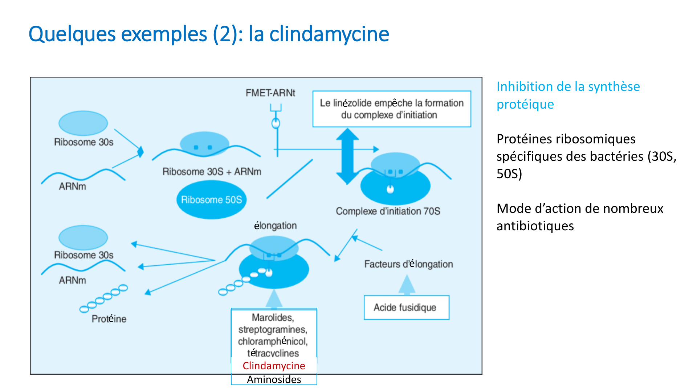
| Famille | Sous-unité cible | Mécanisme | Effet | Molécules clés |
|---|---|---|---|---|
| Aminosides (aminoglycosides) | 30S | Fixation → erreurs de lecture de certains triplets des ARNm → synthèse de protéines anormales insérées dans la membrane → augmentation de la perméabilité membranaire → entrée accrue d'aminoside (effet boule de neige) | Bactéricide concentration-dépendant | Amikacine, gentamicine, tobramycine, streptomycine |
| Tétracyclines / Cyclines | 30S | Blocage de l'entrée de l'ARNt aminoacylé au site A du ribosome → blocage de l'élongation | Bactériostatique | Doxycycline, minocycline, tigécycline |
| Macrolides | 50S | Fixation sur ARNr 23S (peptidyl-transférase center) → blocage translocation → libération prématurée de la chaîne peptidique | Bactériostatique (bactéricide à forte [C]) | Érythromycine, azithromycine, clarithromycine, roxithromycine |
| Lincosamides | 50S | Même site que macrolides (ARNr 23S) → inhibition de la transpeptidation ribosomal | Bactériostatique | Clindamycine (Dalacine), lincomycine |
| Oxazolidinones | 50S | Blocage formation du complexe d'initiation 70S (empêche assemblage 30S + 50S + ARNm + ARNt initiateur) | Bactériostatique | Linézolide (Zyvoxid) |
| Phénicolés | 50S | Inhibition de la peptidyl-transférase (même site que lincosamides) | Bactériostatique | Chloramphénicol (usage limité — aplasie médullaire grave) |
| Synergistines (Streptogramines) | 50S | Composant A bloque l'élongation (site P) ; composant B bloque la transpeptidation → synergie bactéricide en association | Bactéricide (en association A+B) | Pristinamycine (Pyostacine), quinupristine+dalfopristine (Synercid) |
Chaque ATB a 2 noms : DCI (Dénomination Commune Internationale, ex : amoxicilline) et Nom commercial (ex : Clamoxyl®, Amodex®). Classement en familles selon la structure chimique de base → même mécanisme d'action. Les sous-familles (ex : céphalo de 1G, 2G, 3G…) présentent des spectres similaires entre elles.
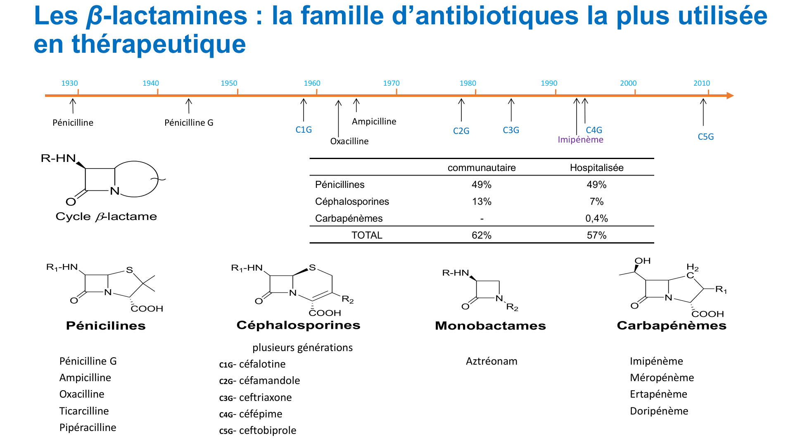
| Famille | Cible | Effet | Molécules représentatives (DCI) | Spectre / Notes |
|---|---|---|---|---|
| Pénicillines G / V | Paroi (PLP) | Bactéricide | Pénicilline G (IV), pénicilline V (PO) | Strepto, neisseria, tréponème. Sensible pénicillinase de staph. |
| Pénicillines A (amino) | Paroi (PLP) | Bactéricide | Amoxicilline, ampicilline | Élargi aux entérocoques, listeria, H. influenzae sensible. Sensible BLSE. |
| Pénicillines M (antistaphylococciques) | Paroi (PLP) | Bactéricide | Oxacilline (Bristopen), cloxacilline | Staph producteurs de pénicillinase. Inactives sur SARM (PBP2a). |
| Pénicillines + Inhibiteurs BL | Paroi (PLP) | Bactéricide | Amoxicilline + clav. (Augmentin), pipéracilline + tazobactam (Tazocilline) | Restaurent activité sur producteurs de BL (BLSE non couverts par amoxiclav) |
| Céphalosporines | Paroi (PLP) | Bactéricide | C3G : ceftriaxone, céfotaxime | C4G : céfépime | C5G : ceftobiprole | Spectre large Gram+ et − (sauf entérocoques, Listeria naturellement R) |
| Carbapénèmes | Paroi (PLP) | Bactéricide | Imipénème (Tienam), méropénème (Méronem), ertapénème (Invanz) | Spectre très large; résistants à la plupart des BL; dernière ligne infections à Gram − multirésistants |
| Glycopeptides | Paroi (D-Ala-D-Ala) | Bactéricide | Vancomycine, téicoplanine (Targocid) | Gram positif uniquement; SARM; ERG (si vanA : R) |
| Aminosides | Ribosome 30S | Bactéricide conc.-dépendant | Amikacine, gentamicine, tobramycine | Large (Gram+ et −); néphro + ototoxique; injectable uniquement; synergie bêta-lactamines |
| Macrolides | Ribosome 50S | Bactériostatique | Érythromycine, azithromycine (Zithromax), clarithromycine (Zéclar) | Gram+, intracellulaires (Legionella, Chlamydia, Mycoplasma); alternative allergie pénicilline |
| Lincosamides | Ribosome 50S | Bactériostatique | Clindamycine (Dalacine) | Gram+, anaérobies; résistance croisée possible avec macrolides (phénotype MLSB) |
| Cyclines / Tétracyclines | Ribosome 30S | Bactériostatique | Doxycycline, minocycline, tigécycline (Tygacil) | Large dont intracellulaires; CI grossesse et enfant < 8 ans; tigécycline : BMR |
| Fluoroquinolones | ADN gyrase / Topo IV | Bactéricide conc.-dépendant | Ciprofloxacine (Ciflox), lévofloxacine (Tavanic), moxifloxacine (Izilox) | Large; Lévo+moxiflo actives sur pneumocoque; résistances fréquentes; risque tendinite |
| Sulfamides + Triméthoprime | Folates (2 étapes) | Bactéricide (combo) | Cotrimoxazole (SMX+TMP = Bactrim) | Large (E. coli IU, Pneumocystis, Listeria, Toxoplasma); résistances fréquentes |
| Polypeptides | Membrane externe LPS | Bactéricide | Colistine = colistiméthate sodique (Colimycine) | Gram négatif uniquement; dernier recours BGN-BMR/EPC; néphrotoxique |
| Lipopeptides | Membrane cytoplasmique | Bactéricide | Daptomycine (Cubicin) | Gram+ uniquement; CI pneumonie (inactivée par surfactant) |
| Rifamycines | ARN polymérase | Bactéricide | Rifampicine (Rifadine), rifabutine (Ansatipine) | Mycobactéries, staph; JAMAIS en monothérapie (résistances en quelques jours) |
| Nitro-imidazolés | ADN (cassures) | Bactéricide | Métronidazole (Flagyl), ornidazole (Tibéral) | Anaérobies stricts uniquement ; C. difficile, Bacteroides, parasites (Trichomonas, Giardia) |
| Oxazolidinones | Ribosome 50S (initiation) | Bactériostatique | Linézolide (Zyvoxid) | Gram+; SARM, ERG; thrombopénie si > 2 semaines; no association IMAO |
| Synergistines | Ribosome 50S | Bactéricide (combo) | Pristinamycine (Pyostacine), quinupristine+dalfopristine (Synercid) | Gram+; SARM; allergie macrolide possible |
| ATB antituberculeux | Multiple | Bactéricide | Rifampicine + isoniazide + éthambutol + pyrazinamide (Rifinah, Rifater) | Mycobacterium tuberculosis; quadrithérapie 2 mois puis bithérapie 4 mois |
| Fosfomycine | Paroi (MurA, synthèse précurseur PG) | Bactéricide | Fosfomycine (Fosfocine IV, Monuril PO) | Large; IU (Monuril dose unique cystite); IV : infections graves à SARM ou EPC |
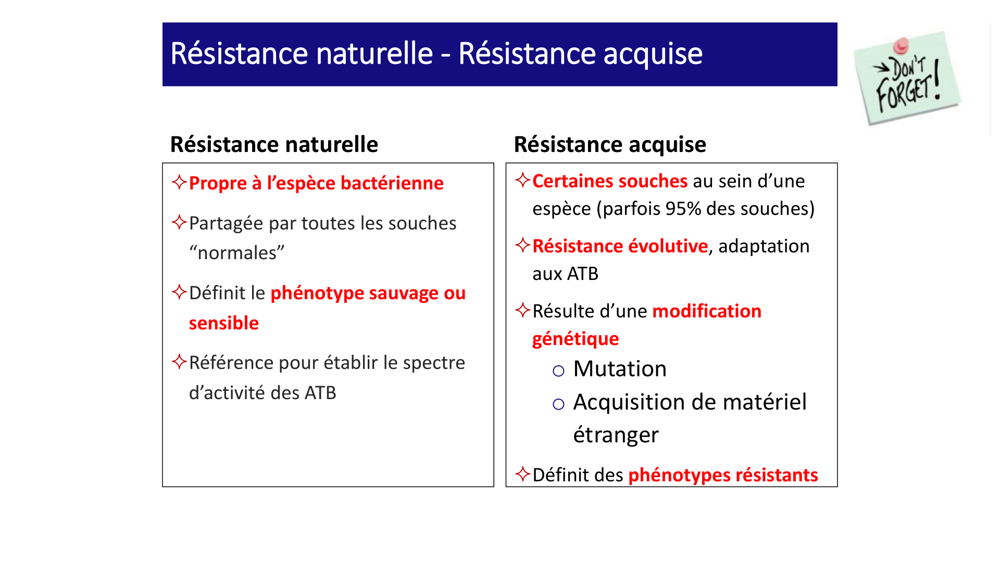
Exemples de résistances naturelles importantes :
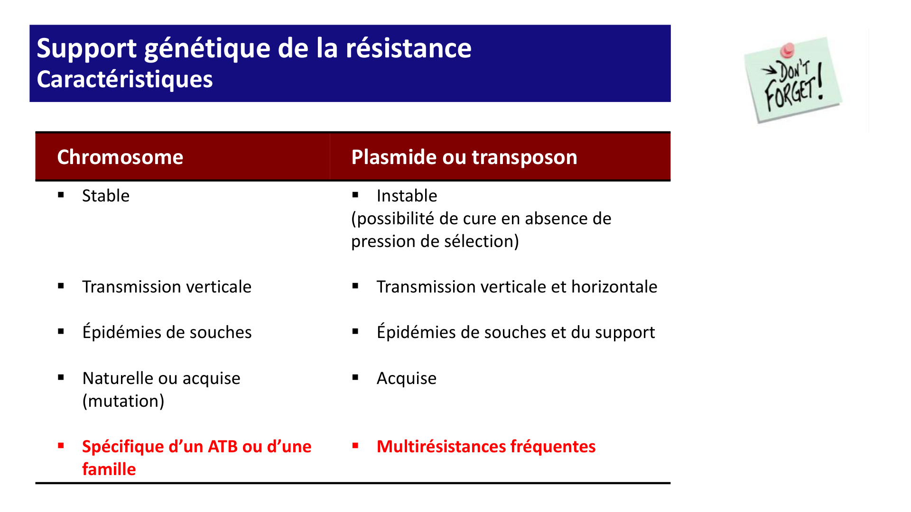
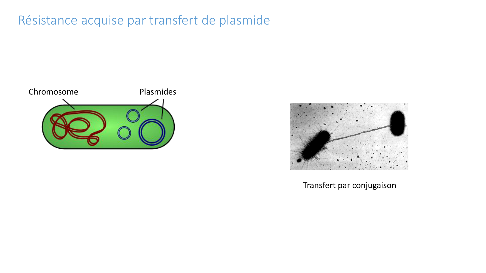
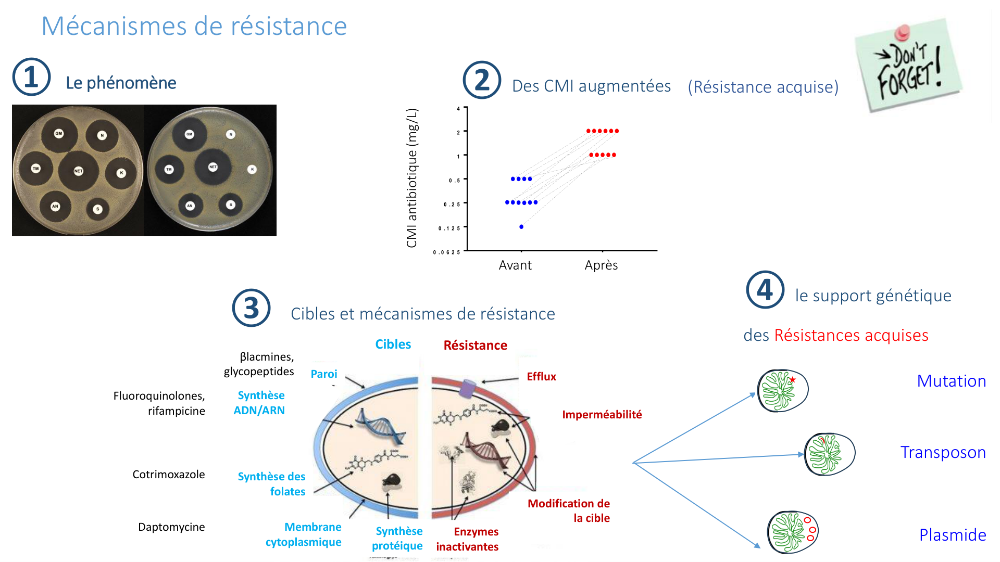
| Mécanisme | Exemple clinique majeur | ATB concerné |
|---|---|---|
| Enzymes inactivatrices | Bêta-lactamases (BLSE, carbapénèmases = EPC) chez entérobactéries ; bêta-lactamase (pénicillinase) chez S. aureus ; AAC(6')-Ib chez entérobactéries | Toutes bêta-lactamines (spectre selon classe enzymatique) ; aminosides |
| Modification de la cible | PBP2a (gène mecA) → SARM résiste à toutes les BL ; PLP mosaïque → PSDP ; mutation GyrA/ParC → FQ-R ; ARNr 23S méthylé (erm) → MLSb | Bêta-lactamines (SARM), fluoroquinolones, macrolides/lincosamides |
| Imperméabilité / Perte de porines | Perte de la porine D2 (OprD) de Pseudomonas aeruginosa → résistance aux carbapénèmes | Bêta-lactamines, fluoroquinolones, aminosides (Gram négatif) |
| Pompes à efflux | Pompe MexAB-OprM de Pseudomonas ; AcrAB-TolC des entérobactéries ; NorA chez S. aureus ; qepA (plasmidique) FQ | Fluoroquinolones, macrolides, tétracyclines, bêta-lactamines (carbapénèmes pour MexAB) |
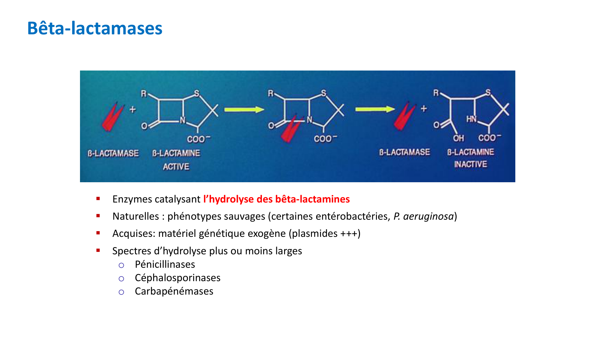
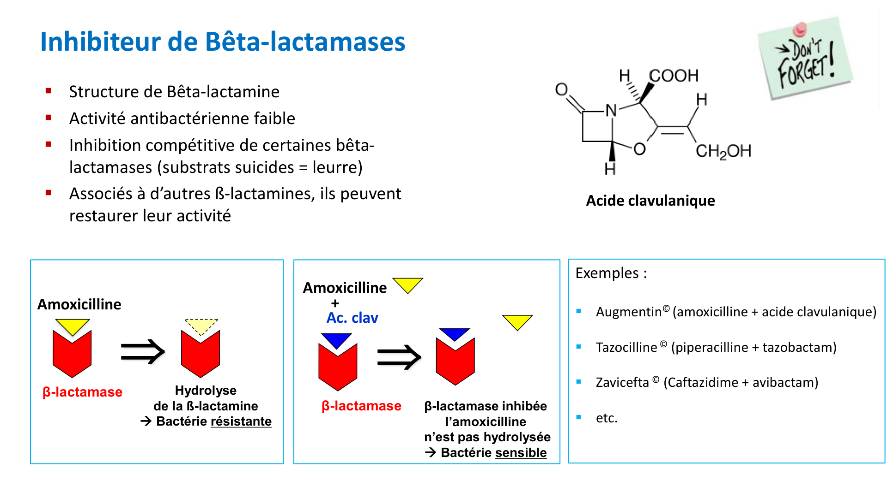
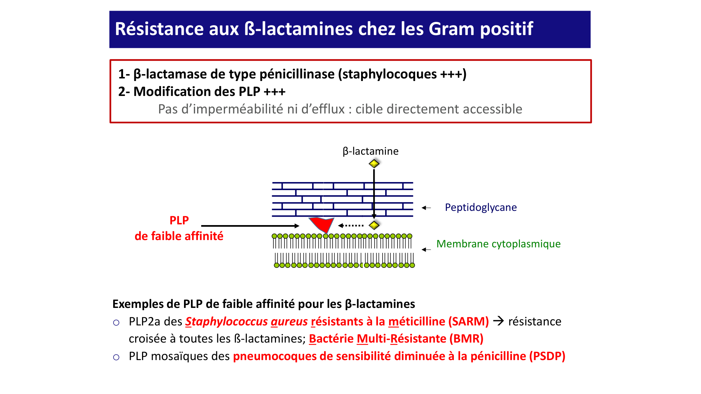
| Groupe | I | II | III |
|---|---|---|---|
| Enzyme naturelle | Aucune | Pénicillinase | Céphalosporinase |
| Sensibilité amoxicilline | Oui | Non | Non |
| Sensibilité amoxicilline + clavulanate | Oui | Oui | Non |
| Sensibilité C1G et C2G | Oui | Oui | Non |
| Sensibilité C3G | Oui | Oui | Oui |
| Exemples d'espèces | E. coli, Proteus mirabilis | Klebsiella pneumoniae, Klebsiella oxytoca | Enterobacter cloacae, Serratia marcescens, Morganella morganii |
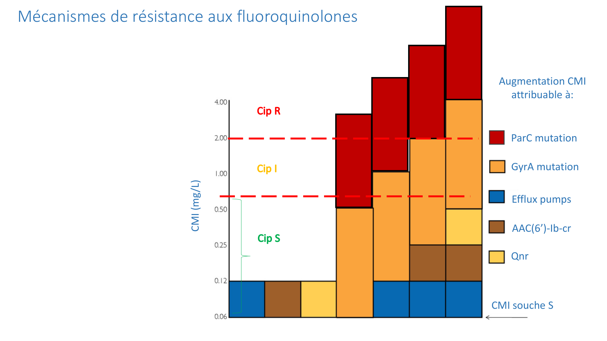
| Type | Définition | Mécanisme |
|---|---|---|
| Résistance croisée | La résistance à un ATB d'une classe entraîne la résistance à tous les ATB de la même classe | Cible commune modifiée (ex : PBP2a → R à toutes les BL) ; enzyme à spectre large (ex : BLSE → R à toutes les C3G) |
| Résistance associée | La résistance à un ATB d'une classe est associée en fréquence à la résistance à une autre classe, sans lien mécanistique direct | Plasmide multirésistance portant des gènes de résistance à des classes différentes → co-sélection. Ex : souche EBLSE souvent co-résistante aux FQ et aminosides (gènes portés sur le même plasmide) |
| Acronyme | Espèce / Définition | Résistances majeures | Traitement de référence |
|---|---|---|---|
| SARM | Staphylococcus aureus résistant à la méticilline (gène mecA → PBP2a) | Toutes les bêta-lactamines | Vancomycine ± rifampicine; ou daptomycine, linézolide, tigécycline |
| SARM-Co | S. aureus méticilline-résistant communautaire (SCCmec IV/V + PVL souvent) | Idem + virulence leucocidine PVL (infections cutanées nécrosantes, pneumonies) | Souvent sensible à clindamycine, TMP-SMX |
| VISA / VRSA | S. aureus intermédiaire (VISA) ou résistant (VRSA) à la vancomycine | VISA : épaississement paroi (piège vanco) ; VRSA : gène vanA (R totale glycopeptides) | Daptomycine, linézolide (VISA); options très limitées (VRSA) |
| EBLSE | Entérobactéries productrices de BLSE (plasmide) | Toutes BL sauf carbapénèmes; souvent co-R aux FQ et aminosides | Carbapénèmes (infections sévères); fosfomycine/pivmécinam (IU) |
| EPC | Entérobactéries productrices de carbapénèmases (KPC, NDM, OXA-48…) | Carbapénèmes + toutes BL + souvent FQ, aminosides, cotrimoxazole | Options très limitées : ceftazidime+avibactam, temocilline, colistine, associations |
| ERG | Entérocoques résistants aux glycopeptides (vanA ou vanB) | VanA : R vanco + téico | VanB : R vanco, S téico | Linézolide, daptomycine, tigécycline |
| BHRe | Bactéries Hautement Résistantes émergentes = ERG + EPC (définition française) | Précautions contact renforcées en établissement de soins | Selon le cas |
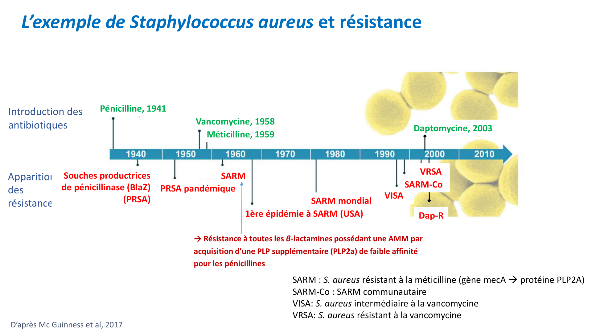
| Paramètre | Définition exacte | Méthode |
|---|---|---|
| CMI Concentration Minimale Inhibitrice |
Concentration d'antibiotique la plus faible à laquelle il n'y a pas de croissance visible dans des conditions de culture standardisées (inoculum fixé ~5×10⁵ UFC/mL, 35°C, 16–24h). Méthode de référence pour étudier la sensibilité. | Microdilution en milieu liquide (bouillon nutritif, méthode de référence) ou Etest (milieu solide) |
| CMB Concentration Minimale Bactéricide |
Plus faible concentration d'ATB pour laquelle il y a un effet bactéricide : ≤ 0,01% de survivants (≤ 99,99% de bactéries tuées, réduction ≥ 3 log) dans des conditions standardisées. | Repiquage des tubes clairs de la CMI sur gélose → comptage des UFC survivantes après 24h |
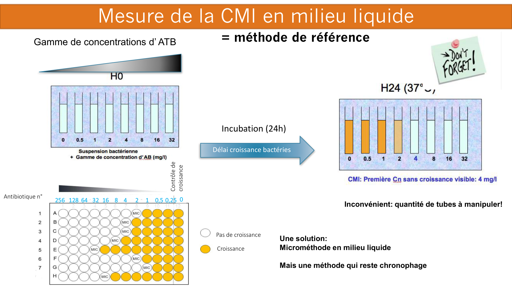
L'Etest est une bandelette plastic imprégnée d'un gradient continu de concentrations d'ATB (de l'extrémité haute à l'extrémité basse), déposée sur une gélose ensemencée avec la bactérie à tester. Après 24h d'incubation, une zone d'inhibition elliptique se forme et la CMI se lit directement à la valeur inscrite sur la bandelette à l'intersection avec le bord de la zone d'inhibition.
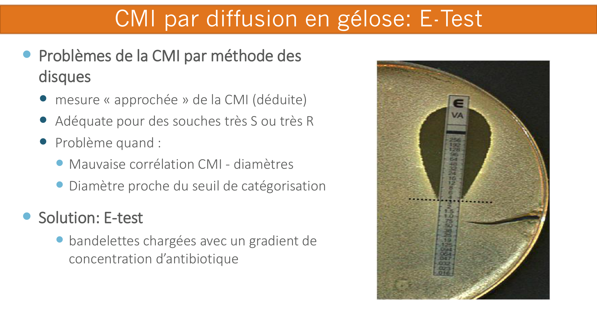
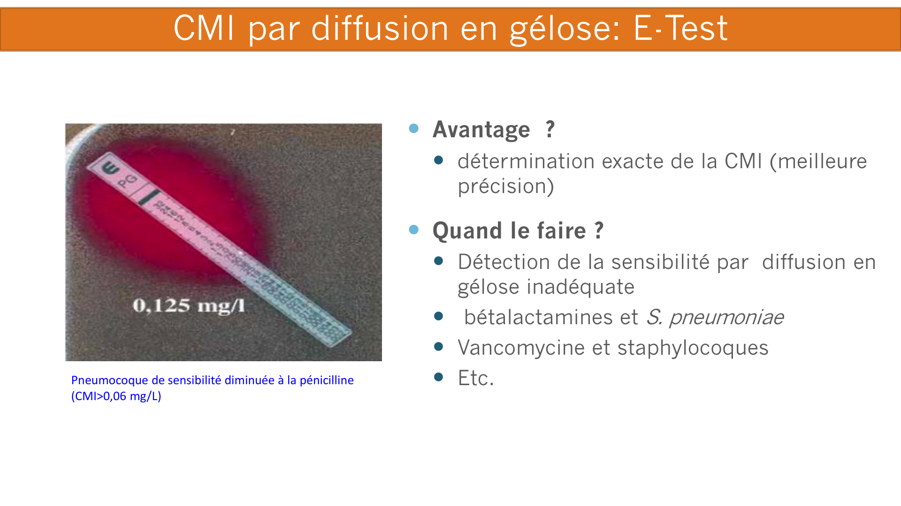
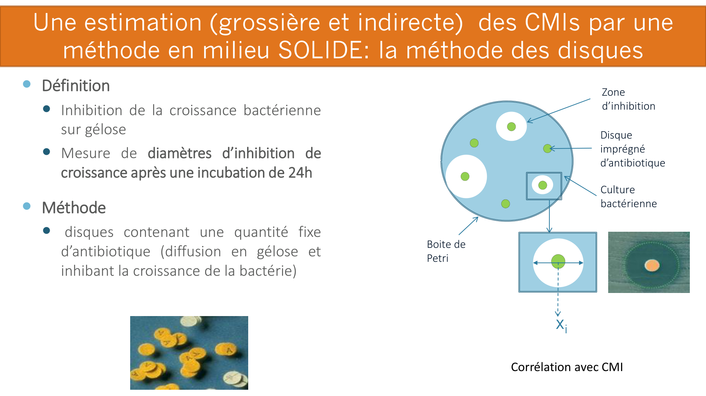
L'antibiogramme est bien plus qu'une mesure de CMI : c'est un conseil thérapeutique. Son but est d'interpréter des CMIs pour prédire le succès (ou l'échec) thérapeutique d'une antibiothérapie pour un patient donné.
Un ATB ne peut être actif in vivo que si une concentration supérieure à la CMI est obtenue au niveau du site infectieux. La CMI seule ne suffit pas à prédire l'efficacité → doit être confrontée aux taux sériques obtenus chez l'homme (PK : pharmacocinétique) et aux données d'études cliniques (PD : pharmacodynamie).
Les CMIs sont comparées à des bornes : c (concentration critique basse) et C (concentration critique haute), déterminées pour chaque couple ATB/espèce bactérienne par l'EUCAST (études PK/PD + essais cliniques).
| Catégorie | Critère CMI / diamètre | Signification clinique | Décision thérapeutique |
|---|---|---|---|
| S — Sensible | CMI ≤ c Diamètre ≥ D |
Probabilité de succès thérapeutique acceptable à dose habituelle par voie générale (immunocompétent) | Traiter à posologie standard |
| SFP — Sensible à Forte Posologie | c < CMI ≤ C d < Diamètre < D |
Succès prévisible uniquement à condition d'administrer de plus fortes doses (si la pharmacocinétique le permet). Anciennement catégorie « I » (intermédiaire) — renommée par EUCAST 2019. | Traiter à forte posologie si atteignable selon le site (ex : IU mais pas méningite pour certains ATB) |
| R — Résistant | CMI > C Diamètre < d |
Forte probabilité d'échec thérapeutique avec cet ATB, quelles que soient les doses utilisées | Ne pas prescrire cet ATB |
Dans la majorité des cas, une activité bactériostatique est suffisante pour traiter une infection (le système immunitaire élimine les bactéries en bactériostase). Un ATB à activité bactéricide est indispensable pour :
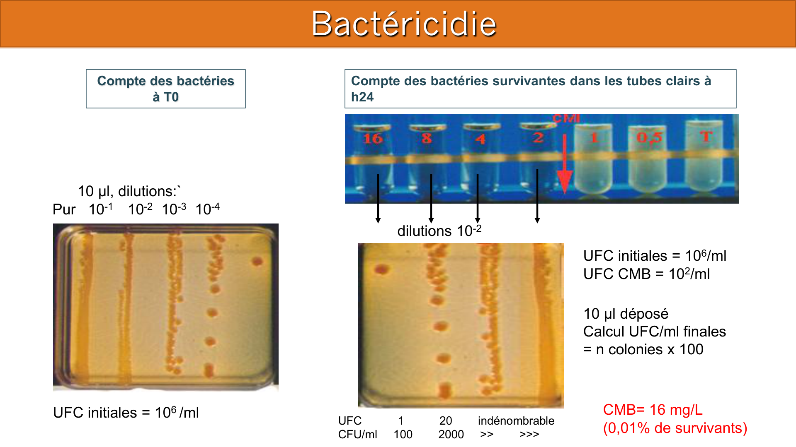
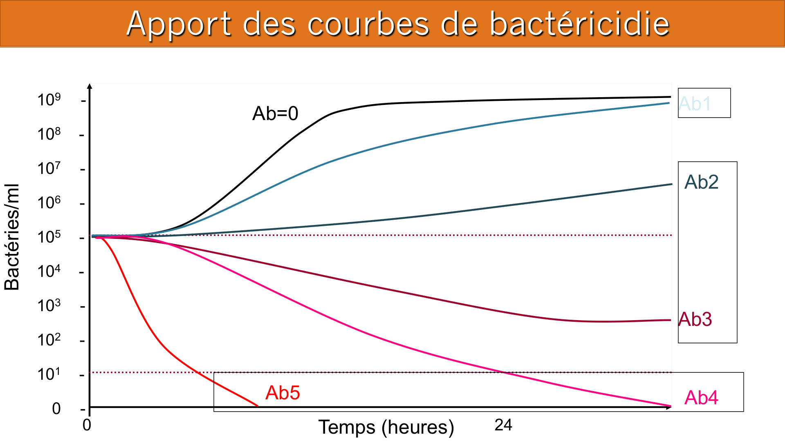
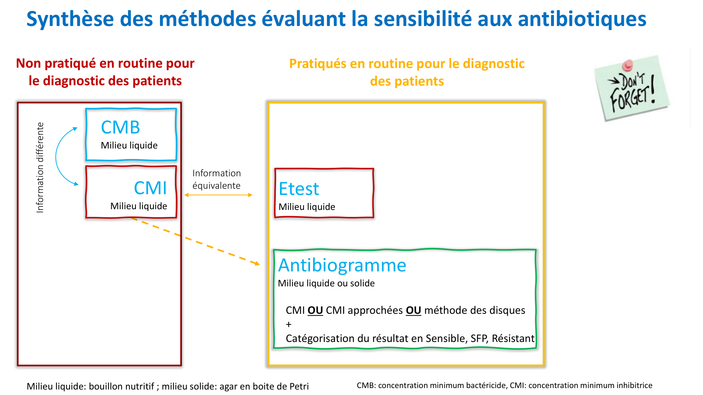
| Rapport CMB/CMI | Classification | Implication clinique |
|---|---|---|
| ≤ 4 | ATB bactéricide | Tue ≥ 99,99% des bactéries. Nécessaire pour endocardite, méningite, patient immunodéprimé sévère. |
| > 4 | ATB bactériostatique | Inhibe la croissance, les bactéries sont vivantes mais ne se multiplient plus. Suffisant dans la majorité des infections chez l'immunocompétent (le système immunitaire élimine les bactéries dormantes). |
En routine hospitalière, l'antibiogramme est réalisé sur automate (VITEK 2, BD Phoenix…) en milieu liquide ou solide. Ces automates permettent :